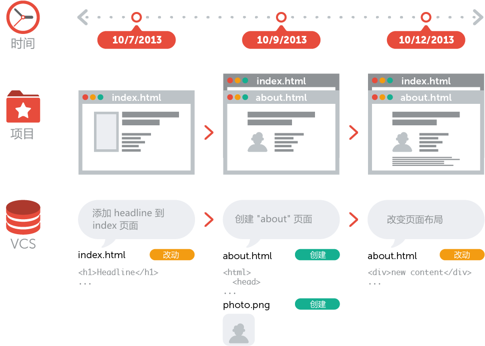
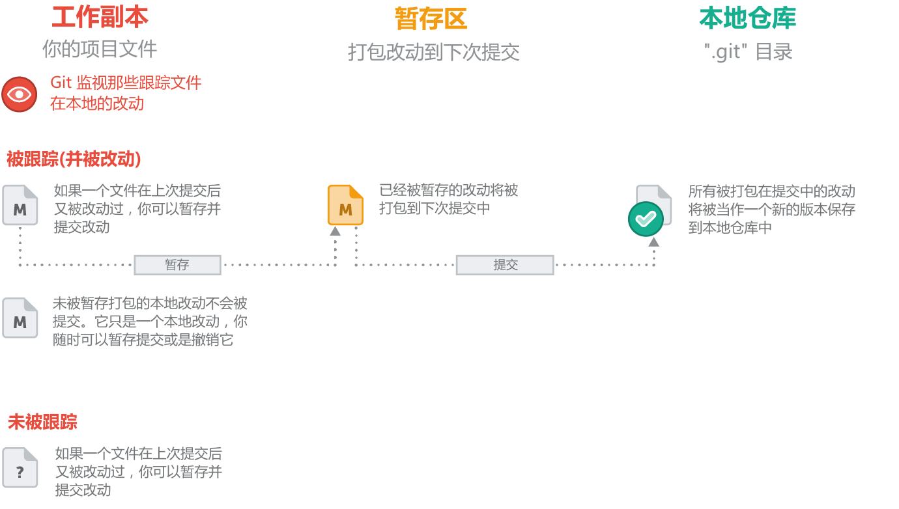

Git基础知识
什么是版本控制（VCS）
为什么选择Git
Git几个概念
Git常见操作
版本控制（VCS）
版本控制可以理解为代码的“数据库”
为什么选择Git
避免混乱
更好的Co-Work
顺应潮流
Git几个概念
仓库（Repository)
你可以把一个仓库想象成一个数据库，在那里你的版本控制系统存储了项目积攒的所有版本和元数据（metadata）。在 Git 中，仓库只是一个在你项目的根目录下名为 “.git” 的隐藏文件夹。你只要知道有这个文件夹存在就足够了。你没有必要也不需要去接触或是搞明白这个文件夹。
提交（Commit）
一次提交包含了一组特定的变化。提交的作者必须为这个变化做一个简短的 "注释（commit message）"。这将有助于别人或者改动者本人在以后的时间里很好地了解和明白这次提交的意图，以及什么时间做了什么改动。
对于每组这样的更改，版本控制系统都会为你的项目缺省的创建一个新的版本。也就是说，会为每次提交创建一个单独的版本。这就是项目在这个特定时间点的快照（snapshot），版本控制系统会很有效的把这信息记录下来，而不是简单地对整个项目进行一次备份。并且提交也能非常准确的知道你的文件以及目录的状态和关系，并对它们进行有效的操作，例如：恢复项目到某些状态。
一个高质量的提交
- 提交要仅仅对应一个相关的改动
- 完整的提交
- 提交前测试
- 高质量的提交注释
本地仓库、远程仓库
"本地" 仓库是放置在你的本地计算机中的，它以一个隐藏文件夹的形式存储在项目的根目录（root folder） 中。你是唯一个有权通过提交改动来操作这个仓库的用户。
"远程" 仓库通常是位于一个远程服务器上的，比如在互联网上或在你的局域网络上。没有任何工作文件与远程仓库相关联：它没有工作目录（working directory），而是完全由 “.git”仓库目录组成的。开发团队使用远程仓库进行数据共享和交换，远程仓库是协作开发时的一个共同基础，每个项目成员都可以发布自己的改动，同样也都可以接收到其他成员的改动。
工作副本、暂存区、本地仓库
储藏（Stash）
可以把储藏想象成一种剪贴板，它会获取你工作副本（working copy）中的所有改动，并且保存到一个新的剪贴板上。然后你就会得到一个“干净”的工作副本，也就是说一个不存在任何改动的工作目录。 之后你随时都可以重新调回那些保存在剪贴板中的改动到你的工作副本中来，从而继续你之前没有完成的工作。
什么时候进行储藏(stash)：
在切换到不同分支之前
在获取（pulling）远程改动之前
在合并（merging）或者衍合（rebasing）一个分支之前
Git常见操作
安装
创建新仓库
创建新文件夹，打开，然后执行
git init以创建新的 git 仓库
检出仓库
执行如下命令以创建一个本地仓库的克隆版本：
git clone /path/to/repository如果是远端服务器上的仓库，你的命令会是这个样子：
git clone username@host:/path/to/repository工作流
你的本地仓库由 git 维护的三棵“树”组成。第一个是你的 工作目录，它持有实际文件；第二个是 暂存区（Index），它像个缓存区域，临时保存你的改动；最后是 HEAD，它指向你最后一次提交的结果。

添加和提交
你可以提出更改（把它们添加到暂存区），使用如下命令：
git add <filename>git add *这是 git 基本工作流程的第一步；使用如下命令以实际提交改动：
git commit -m "代码提交信息"现在，你的改动已经提交到了 HEAD，但是还没到你的远端仓库。
推送改动
你的改动现在已经在本地仓库的 HEAD 中了。执行如下命令以将这些改动提交到远端仓库：
git push origin master可以把 master 换成你想要推送的任何分支。
如果你还没有克隆现有仓库，并欲将你的仓库连接到某个远程服务器，你可以使用如下命令添加：
git remote add origin <server>如此你就能够将你的改动推送到所添加的服务器上去了。
分支
分支是用来将特性开发绝缘开来的。在你创建仓库的时候，master 是“默认的”分支。在其他分支上进行开发，完成后再将它们合并到主分支上。
创建一个叫做“feature_x”的分支，并切换过去：
git checkout -b feature_x切换回主分支：
git checkout master再把新建的分支删掉：
git branch -d feature_x除非你将分支推送到远端仓库，不然该分支就是 不为他人所见的：
git push origin <branch>更新与合并
要更新你的本地仓库至最新改动，执行：
git pull以在你的工作目录中 获取（fetch） 并 合并（merge） 远端的改动。要合并其他分支到你的当前分支（例如 master），执行：
git merge <branch>在这两种情况下，git 都会尝试去自动合并改动。遗憾的是，这可能并非每次都成功，并可能出现冲突（conflicts）。 这时候就需要你修改这些文件来手动合并这些冲突（conflicts）。改完之后，你需要执行如下命令以将它们标记为合并成功：
git add <filename>在合并改动之前，你可以使用如下命令预览差异：
git diff <source_branch> <target_branch>标签
为软件发布创建标签是推荐的。你可以执行如下命令创建一个叫做 1.0.0 的标签：
git tag 1.0.0 1b2e1d63ff1b2e1d63ff 是你想要标记的提交 ID 的前 10 位字符。可以使用下列命令获取提交 ID：
git log你也可以使用少一点的提交 ID 前几位，只要它的指向具有唯一性。
log
如果你想了解本地仓库的历史记录，最简单的命令就是使用:
git log你可以添加一些参数来修改他的输出，从而得到自己想要的结果。 只看某一个人的提交记录:
git log --author=gabel一个压缩后的每一条提交记录只占一行的输出:
git log --pretty=oneline替换本地改动
假如你操作失误（当然，这最好永远不要发生），你可以使用如下命令替换掉本地改动：
git checkout -- <filename>此命令会使用 HEAD 中的最新内容替换掉你的工作目录中的文件。已添加到暂存区的改动以及新文件都不会受到影响。
假如你想丢弃你在本地的所有改动与提交，可以到服务器上获取最新的版本历史，并将你本地主分支指向它：
git fetch origingit reset --hard origin/masterGit使用的黄金法则
一次提交只对映一个相关的改动
当你想要进行提交时，它只能包含一个相关的改动。
也就是说，不要在一次提交中包含一些和提交目的无关的改动，每一种不同的改动要打包在不同的提交中。
好处：
可以让开发团队的其他成员更好地理解这个改动。
可以非常简单地撤销，而不会影响到其它的功能。
高质量的提交注释
一个好的提交注释可以非常容易地明白这次提交的目的和你的改动（过了一段时间对你自己也有帮助）。
注释的内容要尽可能的详细，并且要能回答以下几个问题：为什么要做这次修改？与上一个版本相比你到底改动了什么？
使用分支功能
分支是Git的一个非常强大的功能
分支是一个优秀的工具，并且可以帮助解决开发人员在日常团队开发中存在的代码冲突的问题。
对在不同的开发主题我们分别为之创建独立的分支。比如添加新功能，修复错误，尝试新的想法等等。
不要提交一个还未完成的工作
这并不是意味着在提交前你必须要完成这个功能定义的所有需求。
对于一个很大的功能模块来说，要把它正确分割成小的完整的逻辑块，用来进行频繁的提交。
千万不要为了得到一个干净的工作副本（working copy）而提交一些不完整的改动。在这种情况下，你可以考虑使用 Git 提供的 “Stash” 功能。
不要修改已经被发布的提交
使用“amend” 操作需要考虑以下一些方面：
(a) 你只能使用它来修正你的上一次提交。更早的提交是不能使用 “amend” 来进行操作的。
(b) 你不要对一个已经在远程仓库上被发布，或者说已经被共享的提交进行 “amend” 操作！